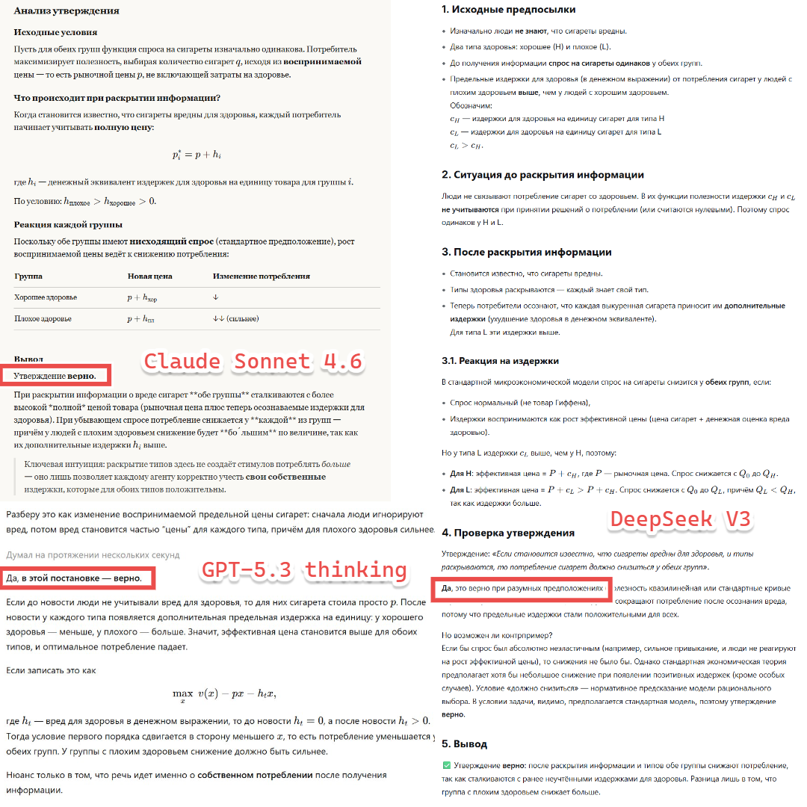
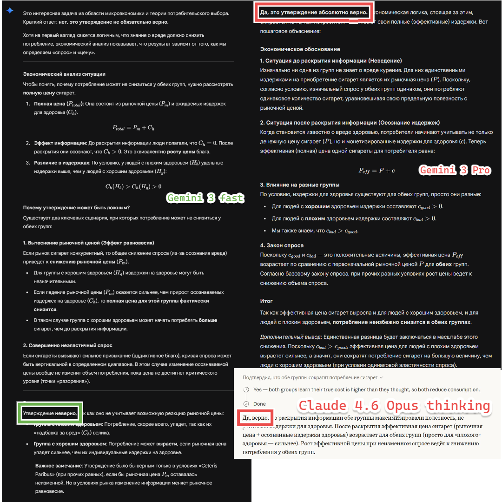

Вашему вниманию задача по экономике, которая предлагалась на письменном этапе дистанционного собеседования в ЛМШ в этом году. Прежде чем читать дальше, честно подумайте и дайте на неё ответ.
Предположим, что изначально люди не осведомлены о неблагоприятных последствиях сигарет для здоровья. Предположим также, что существуют два уровня здоровья: хорошее и плохое. Люди с обоими уровнями здоровья имеют одинаковый спрос на сигареты, но издержки для здоровья на единицу потребляемого блага (в денежном выражении) выше у людей с плохим здоровьем.
Ответили? Вот что пишут по этому поводу популярные нейросети — как без thinking-режима, так и с включённым:


Данное утверждение неверно, и потребление сигарет у людей с хорошим здоровьем может вырасти. Действительно, из условия следует, что после раскрытия информации об издержках здоровья обе группы сокращают спрос на сигареты. Однако дело в том, что снижение спроса людей с плохим здоровьем может привести к сильному падению равновесной цены сигарет.
В таком случае, несмотря на снижение своего спроса, люди с хорошим здоровьем могут начать потреблять больше сигарет, так как те стали значительно дешевле.
Отметим, что потребление в группе с плохим здоровьем вырасти не могло: в новом равновесии устанавливается единая для всех цена P, а поскольку изначально спрос представителей обеих групп был одинаковым, люди с плохим здоровьем обязательно потребляют меньше, чем люди с хорошим. При этом в обеих группах потребление вырасти, разумеется, не могло.
Внимательный читатель может заметить, что мы здесь неявно предполагаем работу конкурентного рынка, но это является спецификой таких задач — если не сказано иного, рынки считаются конкурентными, а цена — подстраивающейся под пересечение спроса и предложения. Если представить нейросетям решение, приведённое выше, они согласятся с ним и признают свою ошибку. Причина же их ошибок, на мой взгляд, кроется в том, что у задачи есть очевидное неправильное решение и нет ничего, что намекало бы на «второе дно», что заставляло бы критически подойти к своему первоначальному ответу.